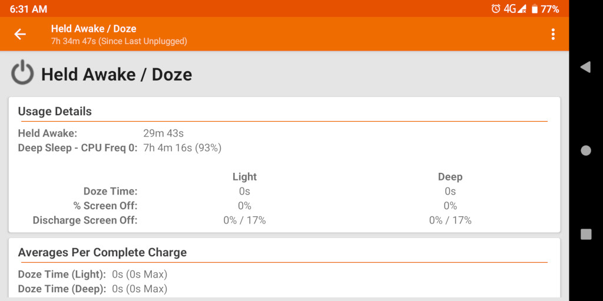

Steward
分享是一種喜悅、更是一種幸福
手機 - Cosmo Communicator - Android - 解決待機耗電的問題
參考資訊：
https://www.oesf.org/forum/index.php?topic=36281.0
1. 關閉如下設定：
Settings => Battery => Battery Manager
2. 進入TWRP後，Mount System，接著刪除如下APK
/System/System/priv-app/Baidu_Location/Baidu_Location.apk
3. 設定WIFI
$ sudo settings put global wifi_scan_aways_enabled 0 $ sudo settings put global wifi_sleep_policy 0
依據OESF論壇的訊息，耗電原因在於CPU並沒有進入深度睡眠，使用者可以使用GSam Battery查看

P.S. 司徒刷了v25系統後，發現沒有辦法進入深度睡眠，於是混刷v22版的dtbo-verified.img、recovery-verified.img、boot-verified.img後，才可以進入深度睡眠
v22混刷腳本
#!/system/bin/sh
PARTED="/sbin/parted_static"
DD="/system/bin/dd"
MBF="/sdcard/cosmo-customos-installer"
BOOT_PARTITION="/dev/block/mmcblk0p"
LINUX_ROOTFS="/dev/block/mmcblk0p43"
OUTPUT="/tmp/output.txt"
ERROR="/tmp/error.txt"
FW_VRSN="v22"
INSTALLER_TITLE="Install Android V22"
INSTALLER_ASK_FOR_TARGET_BOOT=0
echo "Installing Android v22..." > $OUTPUT
log () {
echo -n "$1 " >> $OUTPUT
}
execute() {
log "Running \"$1\""
R=$($1 2> $ERROR)
if [ "$?" -eq "0" ]
then
log "OK\n"
else
log "ERROR: `cat /tmp/error`\n"
fi
}
# Flash Factory Firmware
execute "$DD if=$MBF/$FW_VRSN/dtbo-verified.img of=/dev/block/by-name/dtbo bs=1m"
execute "$DD if=$MBF/$FW_VRSN/recovery-verified.img of=/dev/block/by-name/recovery bs=1m"
execute "$DD if=$MBF/$FW_VRSN/boot-verified.img of=/dev/block/by-name/boot bs=1m"
最後，發現耗電的主要原因是開啟Cover Display，司徒做8小時待機測試，開啟Cover Display時，耗電40%，但是關閉Cover Display後，耗電則降為10%